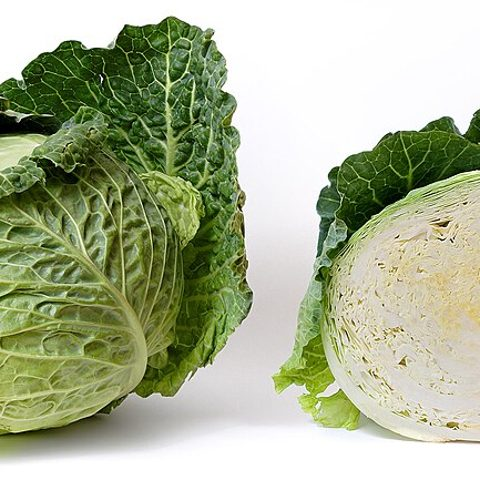
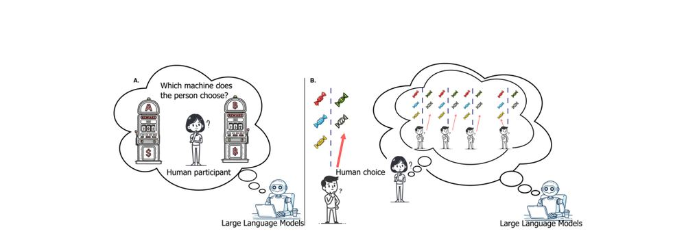
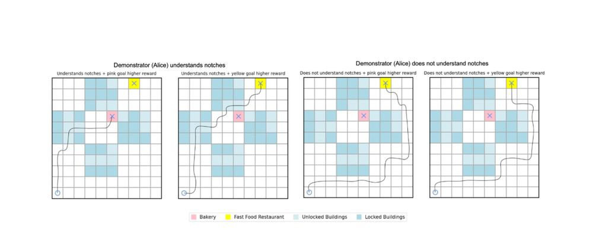
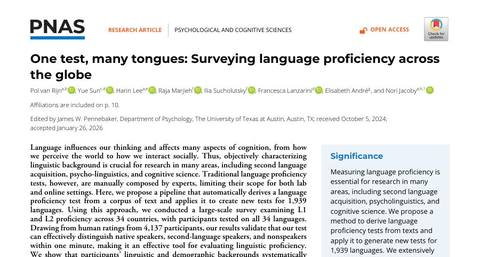

A partner needs an accurate model of the person.
People do not represent, perceive, choose or judge the way idealised agents do. A system can reproduce a person's answers without recovering the concepts and preferences behind them, so we measure what a particular person actually represents. Each task here takes one of those measurements on you.
How do you represent colour?
We measure how a mind represents things by asking about similarity: which of two items is closer to a third. Sixteen of those questions are enough for a structure to appear, and that structure, rather than any single answer, is the first thing a partner needs to know about a person. The same question can be put to a language model with the paper's prompt. Answer the sixteen in the box and your similarity matrix over eight colours fills in beside Claude Fable 5.1's.
What the paper found
The paper put pairwise similarity questions to GPT-3, GPT-3.5 and GPT-4 for six kinds of sensory stimuli, pitch, loudness, colour, vocal consonants, taste and timbre, and compared the answers with human judgments. GPT-4's correlations with people were r = .92 for pitch, .89 for loudness and .84 for colours, and lower for consonants (.57), taste (.54) and timbre (.42). Multidimensional scaling of the model's judgments recovers the colour wheel and the pitch helix with its octave peaks. GPT-4's gain over the earlier models was about the same size in every modality, so multimodal training is not what drives it.
What you just did
You answered sixteen triplet questions, which of two colours is closer to a reference. Each answer adds a count for the pair you chose, and the left matrix fills in as your similarity structure over eight colours. The right matrix holds Claude Fable 5.1's ratings for the same 28 pairs, collected with the paper's pairwise prompt, and the correlation between the two is one person's version of the paper's comparison, where GPT-4 reached r = .84 with people's colour judgments.
Your similarity matrix
Claude Fable 5.1
A sentence about each object predicts how similar people find them.
Ask people to describe things in a few sentences, and the words they use already predict how similar they will say those things are. The paper tested this for images, sounds, and videos, comparing descriptions against hundreds of neural networks, and the descriptions came out ahead. That matters to us because language is the channel a person and an AI share, and this result says it carries much of what people mean by similar. You will describe four photos, rate how similar each pair is, and see whether your own words predicted your ratings.
What the paper found
Across five stimulus sets in three modalities (images, emotional-speech clips, and short videos), 1,492 participants rated pairwise similarity and wrote free descriptions of each stimulus. Similarity was then predicted from 611 pretrained neural networks, from language-model embeddings of the descriptions, and from plain word statistics over the descriptions. In every modality the ordering was the same: stacking language and network embeddings came closest to inter-rater reliability, language-based predictors came next, and network-based predictors last, with word-frequency methods competitive without any pretrained model. Because descriptions grow with the number of stimuli rather than the number of pairs, the method approximates 1,000 by 1,000 audio and video similarity matrices that would take about 2.5 million judgments to collect directly.
What you just did
You produced both halves of the paper's comparison for four photos: the descriptions and the similarity judgments. The rank correlation between your six ratings and the word overlap of your six pairs of sentences is a one-person version of the paper's question, whether language about the things is enough to recover how similar people find them.
At least 20 words per photo; longer descriptions give a fairer test.

How many colour words do you use, and where do you draw the lines?
Every language cuts the colour spectrum into words, and the cuts differ: Italian keeps blu, azzurro, and celeste apart where English has blue. The paper collected colour names from speakers of 22 languages online, and asked GPT-4 for the same names, to see whether a shared internet is flattening those differences and whether the model knows them. We care because an AI that works with you needs to know where a word you both use means something slightly different to each of you. You will name thirty colour patches, one word each, and see how many terms you used and which patches share one.
What the paper found
2,280 native speakers of 22 languages, recruited online and screened with a vocabulary test and an Ishihara test, freely named Munsell colour chips. Languages still differ in structure: Italian keeps blu, azzurro, and celeste apart, and Russian and Japanese split light blue from blue. Online speakers use more terms than the World Color Survey found, 8.54 against 5.71 per language, yet the two sets of counts track each other closely. Given the same prompt in each language, GPT-4 produces language-specific maps with more terms than people use, correlated with the human term counts across languages at r = .39, and reaches for lower-frequency words such as peach, maroon, and burgundy.
What you just did
You did the paper's task for 30 chips instead of 50: name each colour with one word, and let the names partition the chips. The paper compares those partitions across 22 languages and against GPT-4; this page has only your own, in one language, so the comparison here is between your term count and the paper's averages.
Use a basic colour word (red, orange, yellow, green, blue, purple, pink, brown, black, white, grey) where one fits, and a more specific word only when none does.
Twenty yes-or-no items are enough to see a vocabulary.
How many words you know in a language is a good measure of how well you know it, and a short test of rare words mixed with invented look-alikes can measure it in a minute. The papers build such a test automatically for any language from its own texts, so that online studies across dozens of languages can check who speaks the language they claim to. What a person knows, starting with which words, is part of the model a partner needs, and our own experiments recruit across languages and need a fast screen that works the same everywhere. You will see twenty words, say yes or no to each, and get your score.
What the paper found
The 2023 paper builds a vocabulary test for any language from Wikipedia: rare nouns paired with pseudowords generated from the language's own letter statistics. In eight languages the new test correlated r = .86 with an established test, and native accuracy was higher than second-language accuracy in every language. The 2026 paper automates the pipeline for any text corpus and applies it to Wikipedia in 60 languages and to Bible translations in 1,939, across four online experiments. Native speakers scored 88% against 62% for non-native speakers, and scores fell step by step with typological distance.
What you just did
You took a 20-item lexical decision test of the paper's kind: rare real nouns mixed with pseudowords, answered yes or no. The score reports accuracy and a sensitivity index, d prime, which rewards saying yes to real words and no to invented ones.
For risky choices, models predict ideals better than behaviour.
Asked to predict human decisions, language models treated people as closer to rational expected-value maximisers than participants were. The same models more accurately matched how people inferred others' preferences. Reproducing expectations about behaviour is not the same as reproducing behaviour.

Would a language model predict your choice?
People choosing between risky bets are not the expected-value maximisers that models tend to assume. Asked to predict what a person will choose, language models mostly predict the higher-payoff option, so their picture of the chooser is more rational than the person. A partner that wants to predict you needs the pattern in your actual choices. Take the six bets in the box and see how often your pick had the higher expected value.
What the paper found
Language models were asked to predict human choices on risky-choice problems from the choices13k dataset. When the models reasoned step by step, their predictions correlated with expected value at 0.94 for GPT-4o, against 0.48 for people's actual choices, and their correlation with what people actually chose topped out at 0.64. The models predicted an idealised chooser better than a real one.
What you just did
You made six risky choices of the kind in choices13k. The paper's measure is how well a predictor's choice rates correlate with expected value and with real human choice rates; the tally compares your picks with the expected-value maximiser, which is what the models most resembled.
Say a sentence enough times and it starts to sound like song.
Hear a short phrase repeated several times and it can start to sound like singing. Perception runs on statistics: repetition is common in song and rare in talk, so a listener who keeps track of those odds hears song once a phrase repeats enough. A partner that predicts what a person will perceive has to model those statistics, and this paper shows how far the statistics of text alone get you. You will hear a phrase once, rate it, then hear it ten times and rate it again.
Headphones help, and Keep looping lets you listen longer before you rate.
What the paper found
The paper recasts the speech-to-song illusion as the log-odds of a repeated utterance under a model of song against a model of speech, with the two likelihoods estimated from repetition statistics in text corpora. Song corpora have heavier repetition tails, so the odds favour song after two repetitions and keep rising, and sentences differ: "I love you" transforms faster than "go away". The analysis predicts a text-only prose-to-lyrics illusion, and 120 UK participants confirmed it: the mean rating rose from .31 (speech-like) to .58 (song-like) with repetition. GPT-4's ratings of the same items correlated r = .64 with people's.
What you just did
You rated the same utterance before and after repetition, the contrast the illusion turns on. In the paper's account, a listener weighs how likely that much repetition is under song against how likely it is under speech; because song corpora repeat far more, the odds tip toward song after only two repetitions and keep moving with each one. Your two ratings are one listener's version of the mean shift from .31 to .58.
Matching answers can conceal different ways of understanding the world.
Two people, or a person and an AI, can reach the same conclusion while relying on different concepts and relationships. Output agreement cannot establish shared understanding, and inferring someone's values may fail unless their underlying concepts are modelled too.

You cannot read a goal off a path without knowing what the walker knew.
Watching someone act, we try to work out what they want. That inference goes wrong when the person understood their situation differently from us, because a detour that looks like a preference may only be a gap in their map. We care because an AI that helps people has to read their goals through what they know. Look at three trips by the same walker and say which square it wanted and whether it knew about the gap in the wall.
What the paper found
What you just did
Each map is the same room from above: a navy wall with a thin gap (the notch), a khaki square A and a blue square B. The open circle is the start and the black line the path; the three maps are three trips by one walker. Some walkers know they can pass through the notch and others treat it as solid wall; the walker likes one square twice as much as the other but will not take a detour of five or more extra steps to reach it.
Papers on this page





Photos in the description task: Wikimedia Commons, CC BY-SA (ClaudiaTen, Mas3cf, fir0002, Dominik Matus).